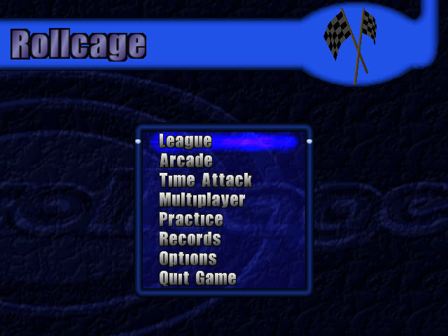
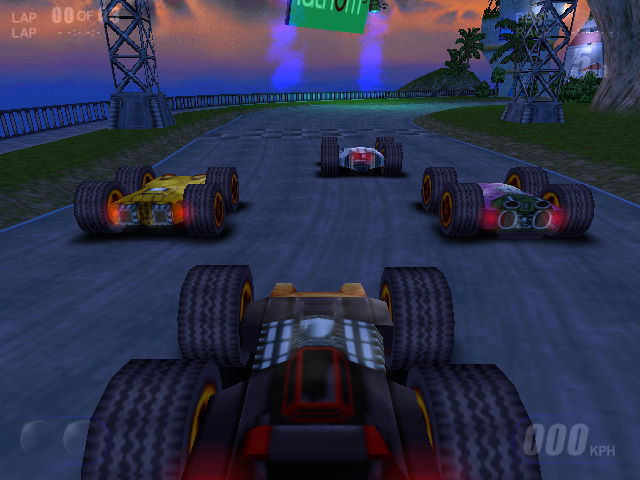

名稱：四驅車大賽1／滾軸賽車1 (Rollcage，英文版) 簡介：Attention to Detail 1999年出品的競速遊戲，由Psygnosis代理發行 [待補]。

保護：光碟 備註：本遊戲有眾多版本的光碟，大體可分為1999/2/3原始版、1999/11/22 OEM版等兩種， 其餘各版遊戲內容都和原始版相同（有的加入手冊），前者為1.0版，後者為1.0b版。 備註：VirtualBox請安裝nGlide，使用3dfx執行。 檔案：Patch_Rollcage10b.rar = 1.0b更新檔